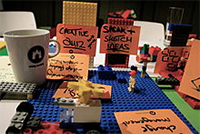

| La realidad aumentada (RA) es el término que se usa para definir una visión a través de un dispositivo tecnológico, directa o indirecta, de un entorno físico del mundo real, cuyos elementos se combinan con elementos virtuales para la creación de una realidad mixta en tiempo real. Consiste en un conjunto de dispositivos que añaden información virtual a la información física ya existente, es decir, añadir una parte sintética virtual a lo real. Esta es la principal diferencia con la realidad virtual, puesto que no sustituye la realidad física, sino que sobreimprime los datos informáticos al mundo real. | Con la ayuda de la tecnología (por ejemplo, añadiendo la visión por computador y reconocimiento de objetos) la información sobre el mundo real alrededor del usuario se convierte en interactiva y digital. La información artificial sobre el medio ambiente y los objetos pueden ser almacenada y recuperada como una capa de información en la parte superior de la visión del mundo real. |
|  | La ludificación —a veces traducido como gamificación, jueguización o juguetización— es el uso de técnicas, elementos y dinámicas propias de los juegos y el ocio en actividades no recreativas con el fin de potenciar la motivación, así como de reforzar la conducta para solucionar un problema u obtener un objetivo. La ludificación pretende introducir estructuras provenientes de los juegos para convertir una actividad a priori aburrida en otra actividad que motive a la persona a participar en ella,1 como sería premiar con insignias ciertos logros a lo largo de la actividad. Si bien introducir valores lúdicos a estas actividades no es una idea nueva,5 se trata de un concepto que se ha visto magnificado en los últimos años como consecuencia del auge del entorno digital, de los videojuegos y de estudios aplicados a estos, como la ludología. |